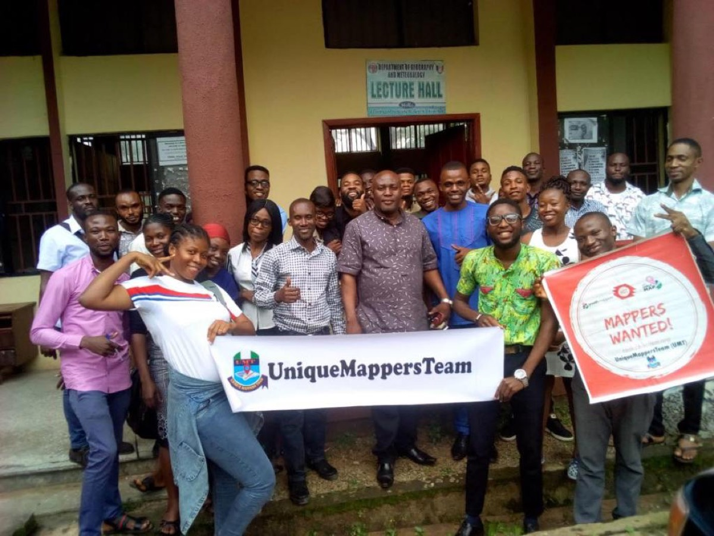

TanitXR is a project, fiscally sponsored by Florida Community Innovation, that empowers volunteers and students to scan at-risk heritage sites. The goal is not only to digitally preserve these places, but also to increase appreciation for them by bringing them into XR environments and experiences.
The pilot country is Tunisia, and now we are excited to expand to Nigeria with the help of the Unique Mappers!
Linked here is a PDF with background on TanitXR’s mission. Read on to learn about the Unique Mappers and the scope of the TanitXR collaboration.

The Unique Mappers Network was founded in 2017 by Victor Sunday during his PhD studies at the University of Nigeria, Enugu. Initially, the network focused on geographic information systems (GIS) and crowdsourcing through OpenStreetMap, with a goal of mapping streets and buildings.
Over time, it grew into a diverse community of more than 500 citizen scientists across Nigeria. They engage in participatory mapping projects for disaster response, humanitarian action, and research, with a specific focus on Sustainable Development Goals (SDGs).
What sets the Unique Mappers apart is their ability to mobilize volunteers from diverse backgrounds—including students, women, and youth—for impactful mapping projects.
They’ve expanded their scope to include efforts like mapping flood-affected regions, monitoring oil spills, and even mapping stalled blood vessels in the brain to support Alzheimer’s research through the Stall Catchers project. Learn more about their citizen science work.
Unique Mappers volunteers are receiving a $500 mini-grant from Florida Community Innovation, TanitXR’s fiscal sponsor. Before the end of 2026, they will make at least 50 scans of heritage sites and help optimize them, optionally joining weekly stand-up meetings on Thursdays at 5 PM WAT (emailing info@floridainnovation.org to receive the Zoom link).
The volunteers will:
We are excited and the best is yet to come!